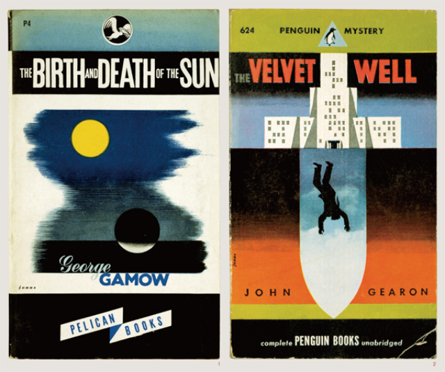

- DAVID PERSON
- 데이비드 피어슨
BIOGRAPHY
- DAVID PERSON
데이비드 피어슨
- Agencies
- 2002 ~ 2007 - Penguin Books
- 2007 ~ - Type Of Image
- David graduated from Central Saint Martins in 2002 before working for Penguin Books as a text designer and later, a cover designer. He left to establish his own studio in 2007, which specialises in print design where typography is the principle form of expression. David has been listed as one of Britain’s Top 50 Designers by the Guardian, named by Debrett’s as one of Britain’s 500 most influential people and was appointed Royal Designer for Industry in 2015.
데이비드는 센트럴 세인트 마틴스를 2002년에 졸업 후 펭귄북스에서 텍스트 디자이너 & 커버 디자이너로 일했습니다. 2007년에는 독립하여 자신만의 타이포그래피 기반의 디자인 회사를 설립하였습니다. 데이비드는 영국 가디언지가 선정한 Top 50명의 영국 디자이너로 선정되었고, 2015년엔 영국 왕립 예술 협회의“Royal Designer for Industry” 상의 후보로 선정되기도 하였습니다.
낭만의 디자인
북디자이너
데이비드 피어슨
1.
Q.
당신의 삶, 혹은 디자인 작업에 있어서의 낭만은 어떤 의미인가?- 내가 하는 일에 애정을 갖는 한, 그리고 당연히, 나는 항상 나의 일을 낭만적인 태도로 바라볼 것이다.
그리고 부활(revival)이란 주제는 내가 하는 모든 작업에 걸쳐 흐르고 있는데, 난 이렇게 과거를 자각하는 것이 굉장히 낭만적인 일이라고 생각한다.
2.
Q.
당신이 생각하기에 가장 낭만적인 북디자인 작업을 꼽아달라.- 질문을 조금 바꿔 나에게 강한 감동을 주었던 디자인적 '접근'을 조명해본다면, 그것은 로버트 조나스(Robert Jonas - 혹은 그가 작품에 서명하는 방식대로, 'Jonas'.)의 북디자인이다.
조나스의 표지 작업들은 마치 퍼즐처럼 독자들이 이미지의 의미를 완성할 수 있도록 하며, 텍스트의 정수를 순수한 상징적, 그래픽적 수단들을 통해 번역해낸다. 그의 표지들은 엄청난 심리적 힘을 가지고 있으면서도 매력적인 외양 때문에 가장 번잡한 가판대에서조차 독자들의 관심을 끌었다. 조나스의 표지들은 결국 제임스 아바티(James Avati) 같은 허황되고 저속한 리얼리즘 작가들의 작업들로 대체되었고, 1940년에서 1950년까지의 십 년을 제외하고는 그 같은 표지들을 다시 볼 수 없었다. 조나스의 표지들은 미국 출판계에서 하나의 빛이었다. - 
- Robert Jonas
The Birth and Death of the Sun by George Gamow Published (1945)
The Velvet Well by John Gearon Published (1947)
3.
Q.
당신의 개인 작업 중에서도 이야기해준다면?- 'Great Ideas' 시리즈에 강한 애정을 가지고 있다. 2004년부터 2010년까지라는 나의 커리어 전체에서의, 그리고 디자이너 개인으로서의 발전 단계들을 보여주기 때문이다. 지금에 와서 나의 몇몇 초기 작업들을 보면 민망해지지만, 그럼에도 불구하고 애정을 느낀다. 그 작업들을 통해 급격히 성장했기 때문이다.
- Great Ideas Series Penguin Books
Nature by Ralph Waldo Emerson (2008)
Books v. Cigarettes by George Orwell (2008)
The Myth of Sisyphus by Albert Camus (2005)
4.
Q.
북디자인은 보이지 않는 텍스트를 보이게 만드는 작업이다. 텍스트에 대해 종속적이기도 하고, 초월하기도 한다는 점에서 북디자인은 또 다른 텍스트라고 생각된다. 이 같은 관점에서 북디자인을 할 때 가장 신경 쓰는 지점은 무엇인가?- 표지 작업에 한정 지어 이야기한다면, 내 접근 방식은 그 안에서 독자들이 그들만의 의미를 추측해낼 수 있도록 일종의 오해의 주머니를 만들어내려고 노력하는 것이다. 나는 ‘모호함’을 중시한다. 독자의 해석을 끌어낼 수 있기를 바라면서 표지에서 무엇을 빼야할지를 결정하는 데 많은 시간을 보낸다.
5.
Q.
타이포그래피는 글자를 둘러싸고 만들어지는 한 세계를 다룬다.
타입페이스 선정부터 시작해 어떻게 그 세계를 운용하는지 궁금하다.- 우선, 나는 디자이너들이 소수의 타입페이스만을 사용해야 한다는 생각에 완전히 반대한다. 하나의 타입페이스를 완전히 이해하고 적절하게 사용하기 위해서는 많은 시간을 필요로 한다는 것을 인정하는 한편, 나는 그것들이 모두 무언가에 사용된다는 사실을 의심한다. 나는 타입페이스가 사용되어지는 정신에 더 관심이 많다. 그것이 바로 타입페이스에 맥락을 부여하며, 그 가치를 우리가 느낄 수 있게 만들어주는 것이다.
6.
Q.
작업을 위한 영감과 모티프는 어떻게 얻나?- 내가 하는 일의 대부분이 타입 주도적으로 이루어지기 때문에 많은 시간을 글꼴(letterform)을 리서치하는 데 보낸다. 나는 운이 좋게도 세계 최고의 타이포그래피 보고 중 하나라 할 수 있는 세인트 브라이드 도서관(St Bride Library) 가까이에서 일하고 있고, 감사하게도 그들은 기꺼이 내게 많은 시간을 내어준다. 특별히 ‘Typophiles’은 가차 없는 무리여서 리서치에 시간을 들인 만큼 성과가 나온다.
7.
Q.
당신은 펭귄북스의 작업으로도 유명하다. 방대한 역사와 뚜렷한 164 콘셉트를 가진 펭귄북스를 작업하는 것은 디자이너로서 매력적인 도전이었을 것 같다. 펭귄북스를 디자인한다는 건 어떤 의미였는지?- 나는 펭귄에 합류하기 이전부터 펭귄북스의 열렬한 수집가이자 팬이었다. 그래서 내게는 ‘Penguin by Design’이라는 디자인 회고 작업을 한다는 아이디어가 너무나도 자연스러웠다. 항상 그 아카이브에 접근하길 원했었는데, 이 프로젝트는 그런 작업을 할 완벽한 구실이 되어주었다. 책들로 이루어진 광대한 회랑들을 따라 작업을 하면서, 펭귄북스 과거 산물의 엄청난 규모를 비로소, 그리고 금세 알게 되었다. 펭귄을 위해 했던 작업들을 돌이켜보면, 지금에 와서야 얼마나 많은 궤적들이 내가 그 아카이브에서 배운 것에 직접적으로 연결되어 있었는지를 알 수 있다.
에디터 : 박선주
번역 감수 : Ana Lee
데이비드 피어슨의 작품
The Works Of Daivd Person
- 1984, 2013
- George Orwell
- Politics And The English
Language, 2013 - George Orwell
- The Mathematics of the Gods
And the Algorithms of Men, 2020 - Paolo Zellini

- The Power Of Words, 2020
- Simone Weil
- Books v. Cigarettes, 2008
- George Orwell
- The Work of Art in the Age of
Mechanical Reproduction, 2008 - Walter Benjamin
- Garden Physic, 2021
- Sylvia Legris
- Shooting an Elephant, 2021
- George Orwell